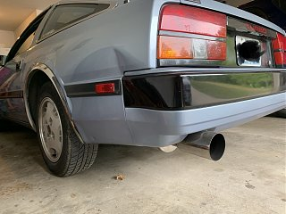
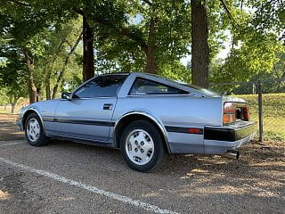
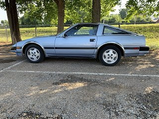

-
Had a great Paintless Dent Repair experience recently. Year ago my mother-in-law backed into the Z with a trailer ball hitch. She denied doing it initially, but came clean when my wife interrogated her.
I lived with it for years, but after taking it to yet another car show with the dent I couldn't stand it anymore. On recommendation from a body guy and Z owner in the community I sought out a PDR guy. Found one locally with good reviews and took a chance. It turned out great!  85 NA2T 9:1 Compression, CM 3" exhaust, Complete Interior Restoration
94 Maxima
…VG30 FTW!! -
I love seeing clean stock zenkis, such a perfect '80s look.' Nice car! -
Thank you very much!85 NA2T 9:1 Compression, CM 3" exhaust, Complete Interior Restoration
94 Maxima
…VG30 FTW!! -
Clean looking for sure! The stock wheels are always fun, I finally dropped mine in favor of 16" wheels to get better tire selection. I think I may try that for one little dent I have.Comment
-
I have a project going with 4 to 5 lug spacer conversion ,,, possibly using 87 turbo charcoal rims … ( BECAUSE i HAVE THEM ) and see what it looks like ,.,,
Like most of these projects its a PITA
And YES thats right you need to go to the larger rim to get the high speed rated tires ! ( like Michelin Pilots )Last edited by dbruce; 08-27-2019, 02:12 PM.
-
-
Hey Stu,
This is scott. Long time since I have see you post anything anywhere. Hope you are still doing well.Restore it, Don't crush it. They don't make them like this anymore.
Scott
85 Turbo, original owner, restored
93 NA Babied

-
Hi Scott! GREAT to see you again man
I am doing well! I finally got my turbo swap project finished about two years ago with the help of some good friends of mine here in Missouri. I've been slowly chipping away at maintenance and repairs over the last few years as well. The Z is running so very good! Smooth, fast, and fun!
I miss the good old days when the forums were hopping and we were all hanging out at 88hybrid.com! I never did get Facebook, so with everyone migrating that way I kind of fell off all together. The same guys that helped me with the turbo swap are also on all of the Facebook Groups. They tell me that Kevin (88hybrid) has pulled his car (the Black Bitch) out of storage recently. He might even be going to the Gateway Z Club Car Show we have in STL every year, which happens to be this Sunday. I have missed several years, but I'm hoping to be there this Sunday.
Life is good otherwise! Still working away as a Software Developer (17 years of experience now ). My daughter is 10 years old. Not much else has changed!
How have you been? I hope life is treating you well. I remember you had a cancer scare a few years back.85 NA2T 9:1 Compression, CM 3" exhaust, Complete Interior Restoration
94 Maxima
…VG30 FTW!! -
Hey Stu. Great to see an old timer back on a forum. I am like you, I don't do social media, too many risks. So once this forum migrated to Facebook, it kind of died. I still have my 85T but have not driven it in a few years as I need to finish the resto I started and now my body doesn't want to cooperate. Between my bad back, bad knees, bad wrists, bad thumbs, and recent complete rupture of 3 of my 4 quadricep tendons, every time I do anything I pay the price.
All I need to do to finish the resto is fix the problem with my brake fluid going somewhere (there are no spots under the car) and re-installing the interior I have been restoring. I miss driving it.
The Melanoma cancer scare has now been 10 years. It started in 2004 and in 2009 I went to Stage 3B where the cancer spread to my lymph nodes. I got very lucky there. Other than my muscular-skeletal issues mention above, I am in great shape, don't take any medications at all at age 65. Mostly the damn arthritis.Last edited by FlyingT; 08-30-2019, 03:55 PM.Restore it, Don't crush it. They don't make them like this anymore.
Scott
85 Turbo, original owner, restored
93 NA Babied
-
So glad to hear you came through your cancer scare! Sad to hear that you are struggling with those muscular-skeletal issues. I can imagine how that would make reinstalling interior pieces very difficult. I just recently had parts of my interior out for both that dent fix as well as some work on the hatch/fuel door cable. Then I also had all the radio/climate control stuff out. I'm 36 with no issues and I was SO SORE afterwards. My hands/wrists were angry. My back and knees complained when I pulled the carpet up. These little cars don't make it easy to fix interior stuff without otherwise damaging good parts.
I wish I lived closer! I would totally come over and help you with those last few items. I have done so much z31 interior stuff over the years that it has become second nature. I have some great z31 friends out here in Missouri that would be able to help track down the brake fluid issue as well. Would love to see your 85 back on the road! It's such a beautiful car. I can imagine you miss driving it. I get antsy over the long winter months. It's only gotten worse now that it's turbocharged
I've been really into working on the 85 recently. Getting that dent pulled somehow gave me a surge of motivation. I've been fixing a bunch of small issues. Tackling a misaligned windshield wiper arm tonight. Just ordered a new hatch/fuel door cable from thezcarstore.com. Feels good to take care some of these small issues and repairs. Always something to fix on these old cars.
I went to a Z car show in STL this weekend. Had a great time! There were something like 10 Z31's there. I'll be posting pictures soon!
Good to see you again here. I am going to try and not be a stranger 85 NA2T 9:1 Compression, CM 3" exhaust, Complete Interior Restoration
85 NA2T 9:1 Compression, CM 3" exhaust, Complete Interior Restoration
94 Maxima
…VG30 FTW!!

Copyright © 2006–. All rights reserved. Privacy Policy
Comment